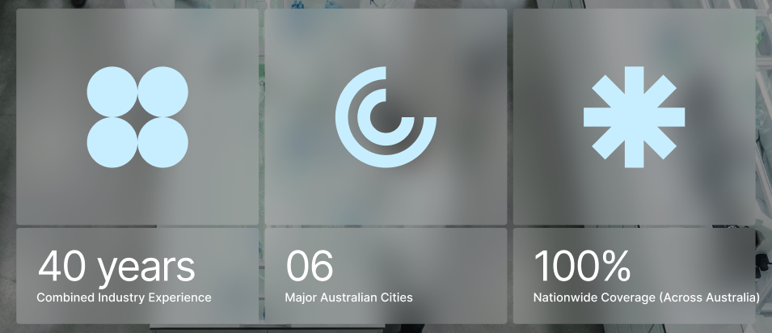

Note lại issue/lưu ý khi code component này cho WP (VC), check lại trước khi bắt đầu project mới có component tương tự để không lặp lại lỗi cũ.

3 (hoặc n) item dạng cột, mỗi item gồm: icon (svg), số liệu lớn (number), label mô tả bên dưới. Có border/divider dọc ngăn cách giữa các item, nằm đè lên background image (thường có overlay tối để chữ trắng nổi lên).
$html = '<div class="vii-icon-descriptions ' . esc_attr($class) . '" style="background-image:url(' . esc_url($bg_image) . ')">';
$html .= '<div class="vii-icon-descriptions__overlay"></div>';
$html .= '<div class="vii-icon-descriptions__items">';
foreach ($items as $i => $item) {
$is_last = $i === count($items) - 1;
$item_class = 'vii-icon-descriptions__item' . ($is_last ? ' is-last' : '');
$html .= '<div class="' . esc_attr($item_class) . '">';
$html .= '<div class="vii-icon-descriptions__icon" aria-hidden="true">' . $item['icon'] . '</div>';
$html .= '<div class="vii-icon-descriptions__number">' . esc_html($item['number']) . '</div>';
$html .= '<div class="vii-icon-descriptions__label">' . esc_html($item['label']) . '</div>';
$html .= '</div>';
}
$html .= '</div>'; // items
$html .= '</div>'; // vii-icon-descriptions/*********************************************
* Icon Description
**********************************************/
.vii-icon-descriptions {
position:relative;
background-size:cover;
background-position:center;
}
.vii-icon-descriptions__overlay {
position:absolute;inset:0;
background:rgba(0,0,0,.45);
}
.vii-icon-descriptions__items {
position:relative;
display:flex;
}
.vii-icon-descriptions__item {
flex:1 1 0;
padding:32px 28px;
border-right:1px solid rgba(255,255,255,.3);
}
/* chỉ ẩn border item cuối CÙNG HÀNG, không phải cuối list (xem mục Issue bên dưới) */
.vii-icon-descriptions__item.is-last {
border-right:none;
}
.vii-icon-descriptions__icon svg { width:48px;height:48px;fill:currentColor; }
.vii-icon-descriptions__number { font-size:32px;font-weight:700;margin-top:16px; }
.vii-icon-descriptions__label { color:rgba(255,255,255,.8); }
@media only screen and (max-width:768px) {
.vii-icon-descriptions__items { flex-wrap:wrap; }
.vii-icon-descriptions__item {
flex:1 1 50%;
border-right:1px solid rgba(255,255,255,.3);
border-bottom:1px solid rgba(255,255,255,.3);
}
/* item lẻ cuối cùng full width, hết border-right + border-bottom */
}Border/divider cuối hàng khi responsive
last-child chỉ đúng khi không wrap. Khi mobile
chia 2 cột (wrap), item cuối cùng của mỗi hàng
cũng phải ẩn border-right, không chỉ item cuối
list. Dùng nth-child(2n) hoặc CSS
:has()/data-attribute thay vì chỉ
:last-child.
Số liệu (number) không responsive theo container
Nếu number dài (vd "100%", "1,000+") mà set
font-size cố định dễ vỡ layout ở item hẹp. Nên dùng
clamp() hoặc giảm size ở breakpoint nhỏ, và kiểm tra
với data dài nhất có thể, không chỉ data trên design.
SVG icon không đồng nhất viewBox
Icon từ design thường xuất svg với viewBox khác nhau → set cùng width/height nhưng nhìn to nhỏ không đều. Check lại viewBox/padding bên trong từng icon, căn baseline cho đều nhau.
Case thiếu item (1-2 item thay vì 3-4)
Client có thể chỉ nhập 1-2 item trong VC. Check layout không bị
item to bất thường hoặc bị lệch trái/phải, có thể cần class
has-2-items/has-single-item tương tự
pattern blog slider để custom width khi ít item (xem
blog-slider.html).
Accessibility
Icon trang trí (không mang nghĩa) thì thêm
aria-hidden="true", để số liệu + label là nội dung
chính được đọc bởi screen reader.
Ảnh nền
Nếu background là ảnh thật (không phải màu), dùng
ev_get_attachment_image thay vì
background-image inline để có lazyload/srcset đúng
chuẩn, tránh CLS — xem thêm phần "Ảnh thì thường phải có" trong
note chung của Viivue.